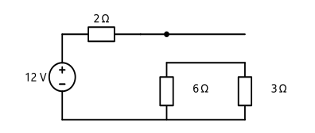
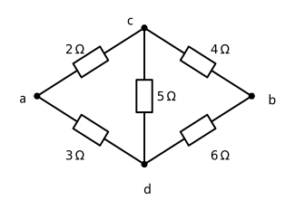
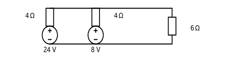
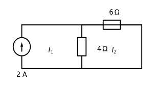
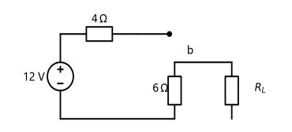
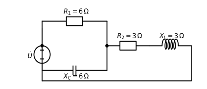

综合卷：多步变换、多问结构，难度贴近老师笔记里的 2-11 与 4-9。
和 A 卷的分工：A 卷考单点会不会，B 卷考能不能串起来。B 卷里每道题都至少两步，第一步错，后面全错——所以每步写完先自查再往下走。
$12\ \mathrm{V}$ 电压源经 $R_1 = 2\ \Omega$ 后，分成两条并联支路：$R_2 = 6\ \Omega$ 与 $R_3 = 3\ \Omega$，再回到电源负极。
（1）求总电流；（2）求三个电阻的功率和电压源发出的功率；（3）验证功率平衡。

图 · 一个串联电阻 + 两条并联支路
（1）并联部分 $6 \parallel 3 = 2\ \Omega$，总电阻 $2+2=4\ \Omega$，$I = 12/4 = 3\ \mathrm{A}$。
（2）$P_{R1} = I^2R_1 = 9 \times 2 = 18\ \mathrm{W}$（吸收）。
并联段电压 $U_p = I \times 2 = 6\ \mathrm{V}$，$P_{R2} = \dfrac{6^2}{6} = 6\ \mathrm{W}$，$P_{R3} = \dfrac{6^2}{3} = 12\ \mathrm{W}$（都吸收）。
电压源发出 $P = 12 \times 3 = 36\ \mathrm{W}$。
（3）吸收合计 $18 + 6 + 12 = 36\ \mathrm{W}$ = 发出 $36\ \mathrm{W}$ ✓
要点：并联段各支路电压相同，用 $U^2/R$ 比先求分流再算功率更快。
桥式电路：a–c 为 $R_1 = 2\ \Omega$，c–b 为 $R_2 = 4\ \Omega$，a–d 为 $R_3 = 3\ \Omega$，d–b 为 $R_4 = 6\ \Omega$，c–d 之间跨接 $R_5 = 5\ \Omega$。求 $R_{ab}$。

图 · 桥式电路，ab 为端口
（1）判断电桥是否平衡，说明依据；（2）求 $R_{ab}$。
（1）对角乘积：$R_1R_4 = 2 \times 6 = 12$，$R_2R_3 = 4 \times 3 = 12$，相等 → 平衡。
平衡意味着 c、d 等电位，$R_5$ 中无电流，可以去掉。
（2）两支路串联后并联：$$R_{ab} = (2+4)\parallel(3+6) = 6\parallel9 = \frac{6\times9}{15} = 3.6\ \Omega$$
易错：平衡条件是"对角乘积相等"，不是相邻乘积，也不是比值随便配。$R_1R_4$ 与 $R_2R_3$ 这一对才对。
$24\ \mathrm{V}$ 串 $4\ \Omega$ 与 $8\ \mathrm{V}$ 串 $4\ \Omega$ 并联，外接 $6\ \Omega$ 负载。
（1）求等效电压源；（2）求负载电流；（3）若把 $8\ \mathrm{V}$ 电源的极性反接，负载电流变成多少？

图 · 两个实际电压源并联，外接 6 Ω 负载
（1）转电流源：$24/4 = 6\ \mathrm{A}$、$8/4 = 2\ \mathrm{A}$。合并：$I_s = 8\ \mathrm{A}$，$R = 4\parallel4 = 2\ \Omega$。转回：$U_s = 8 \times 2 = 16\ \mathrm{V}$，内阻 $2\ \Omega$。
（2）$$I = \frac{16}{2+6} = 2\ \mathrm{A}$$
（3）反接后两个电流源方向相反：$I_s = 6 - 2 = 4\ \mathrm{A}$，$R$ 仍为 $2\ \Omega$，$U_s = 8\ \mathrm{V}$。
$$I' = \frac{8}{2+6} = 1\ \mathrm{A}$$
要点：第（3）问是典型的"改一个条件再问一次"。方向反了就是相减，不是重新算一遍。
两个网孔，回路电流均取顺时针。左网孔外侧支路是 $2\ \mathrm{A}$ 电流源（方向与顺时针一致）；两网孔共用中间支路 $R_2 = 4\ \Omega$；右网孔还有 $R_3 = 6\ \Omega$。
（1）求两个回路电流；（2）求中间共用支路的真实电流和方向；（3）说明这道题为什么只需要一个方程。

图 · 电流源在左网孔外围支路
（1）电流源只属于左网孔，它直接规定了左回路电流：$I_1 = 2\ \mathrm{A}$。
右网孔：$-R_2I_1 + (R_2+R_3)I_2 = 0$，即 $-4\times2 + 10I_2 = 0$，$I_2 = 0.8\ \mathrm{A}$。
（2）共用支路上 $I_1$ 向下、$I_2$ 向上，反向取差：$I_{R2} = 2 - 0.8 = 1.2\ \mathrm{A}$，方向向下。
（3）因为电流源在外围支路，左网孔的电流已知，少了一个未知量，所以方程从两个减到一个。这正是回路法比节点法省事的情形。
$12\ \mathrm{V}$ 电压源经 $R_1 = 4\ \Omega$ 接到节点 b，$R_2 = 6\ \Omega$ 由 b 接地。在 b 与地之间外接可变负载 $R_L$。
（1）求开路电压 $U_{oc}$、等效内阻 $R_{eq}$、短路电流 $I_{sc}$；（2）画出戴维南和诺顿两种等效电路；（3）$R_L$ 取何值时功率最大，最大功率多少？

图 · b 与地之间接可变负载 $R_L$
（1）开路时 $U_{oc} = 12 \times \dfrac{6}{4+6} = 7.2\ \mathrm{V}$。
电压源短接后从 b 看：$R_{eq} = 4 \parallel 6 = 2.4\ \Omega$。
$$I_{sc} = \frac{7.2}{2.4} = 3\ \mathrm{A}$$
（2）戴维南：$7.2\ \mathrm{V}$ 电压源串联 $2.4\ \Omega$；诺顿：$3\ \mathrm{A}$ 电流源并联 $2.4\ \Omega$，电流方向由 b 指向外部。
（3）$$R_L = R_{eq} = 2.4\ \Omega,\qquad P_{max} = \frac{U_{oc}^2}{4R_{eq}} = \frac{51.84}{9.6} = 5.4\ \mathrm{W}$$
三个易错点：分母是 $4R_{eq}$；求内阻时负载要先摘掉；诺顿图必须画出来，光写数字会丢分。
$R_1 = 6\ \Omega$ 与电容（$X_C = 6\ \Omega$）并联得 $Z_1$；$Z_1$ 再与 $R_2 = 3\ \Omega$、电感（$X_L = 3\ \Omega$）串联。接 $\dot U = 60\angle0^\circ\ \mathrm{V}$。
（1）求 $Z_1$ 和总阻抗 $Z$；（2）求总电流；（3）求两条并联支路的电流，并验算。

图 · 并联段 $Z_1$ 与 $R_2$、$L$ 串联（框图）
（1）$$Z_1 = \frac{6(-j6)}{6-j6} = \frac{-j36(6+j6)}{72} = 3 - j3\ \Omega$$
$$Z = (3-j3) + 3 + j3 = 6\ \Omega$$
（2）$$\dot I = \frac{60\angle0^\circ}{6} = 10\angle0^\circ\ \mathrm{A}$$
（3）并联段电压 $\dot U_{Z1} = 10(3-j3) = 30 - j30\ \mathrm{V}$。
电阻支路：$\dot I_R = \dfrac{30-j30}{6} = 5 - j5\ \mathrm{A}$
电容支路：$\dot I_C = \dfrac{30-j30}{-j6} = 5 + j5\ \mathrm{A}$
验算：$(5-j5)+(5+j5) = 10\ \mathrm{A} = \dot I$ ✓
套路：先算并联段阻抗 → 串联相加 → 总电流 → 求并联段电压 → 再分流。不能一开始就分电流，因为那时还不知道并联段电压。
两套卷子配合用：A 卷查漏，B 卷练串联能力。建议先做 A（今天），明天做 B（限时），考前最后一天只回看两套卷的错题。